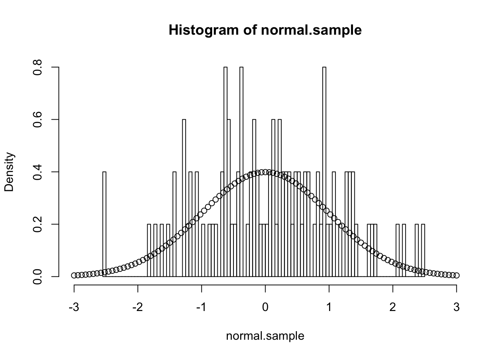
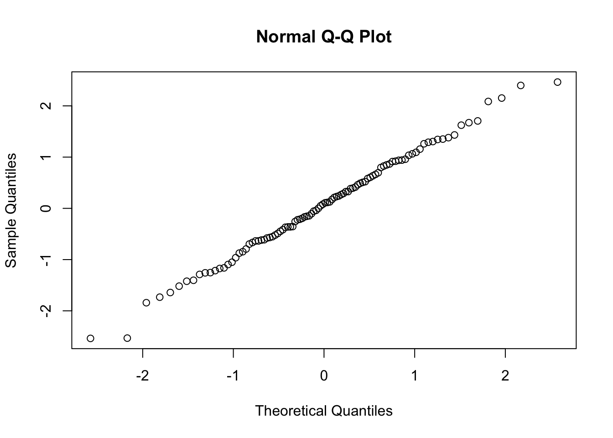
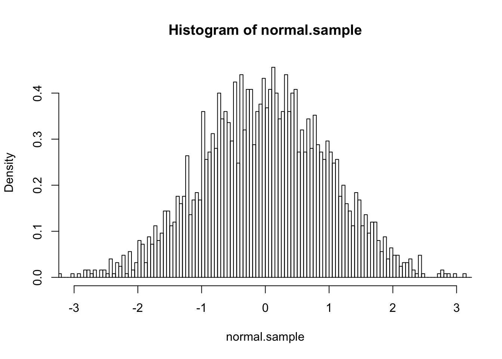
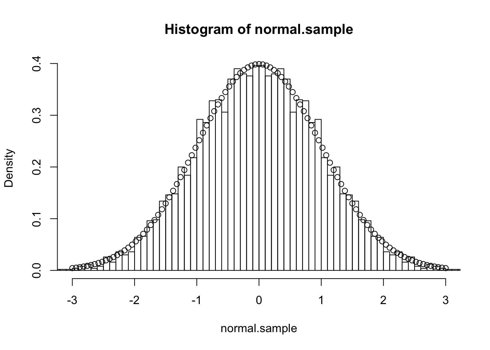

R Markdown
For this first blog post, I wanted to render some R Markdown code, see how this works and catch up with all the things I always wanted to do. But curiously, by doing so I bumped into some weird stuff about cbind() and c().
So let’s start this journey with something easy, like plotting the distribution of a normal distribution.
normal.sample<-rnorm(100,0,1)Now that we have the sample, we can plot the histogram of the sample :
hist(normal.sample,
xlim=c(-3,3),
breaks=100,
probability = T)
points(seq(-3,3,by=(3-(-3))/100),
dnorm(seq(-3,3,by=(3-(-3))/100),0,1))
qqnorm(normal.sample)
shapiro.test(normal.sample)##
## Shapiro-Wilk normality test
##
## data: normal.sample
## W = 0.99482, p-value = 0.9701var(normal.sample)## [1] 1.060658mean(normal.sample)## [1] 0.06686328It seems like 100 simulations are not enough, so why don’t we try with 10000 :
normal.sample<-rnorm(10000,0,1)
hist(normal.sample,
xlim=c(-3,3),
breaks=100,
probability = T)
points(seq(-3,3,by=(3-(-3))/100),
dnorm(seq(-3,3,by=(3-(-3))/100),0,1))
v<-var(normal.sample)
v## [1] 1.008404m<-mean(normal.sample)
m## [1] 0.0008420575We see that the variance differs around 0.84%. As for the mean, we can see that it is 0.001.
Now, here’s a trick : the standard normal distribution is a symetric distribution with mean=0, so if we take n simulations and extend them with the same n simulations but by multiplying them by -1, we should see better results for the first two moments.
normal.sample<-rnorm(2500,0,1)
hist(normal.sample,
xlim=c(-3,3),
breaks=100,
probability = T)
var(normal.sample)## [1] 0.9764315normal.sample<-c(normal.sample,-normal.sample)
hist(normal.sample,
xlim=c(-3,3),
breaks=100,
probability = T)
points(seq(-3,3,by=(3-(-3))/100),
dnorm(seq(-3,3,by=(3-(-3))/100),0,1))
v<-var(normal.sample)
v## [1] 0.9762426mean(normal.sample)## [1] -3.469447e-22Well, normally the mean should be equal to 0. Let’s recall how the mean is computed :
\(\bar{X} = \frac{1}{N} \sum_{i=1}^N X_i\)
As we took normal.sample and it’s negative version (*-1), the sum shoud be 0 because \(X_i=-X_{2500+i}\).
normal.sample<-round(normal.sample,digits=2)
mean(normal.sample)## [1] 0var(normal.sample)## [1] 0.9763253Ok, still doesn’t work :p the mean is not equal to 0, but very close!
Let’s now try this
x<-rnorm(2500,0,1)
y<- -x
sum(x+y)## [1] 0sum(c(x,y))## [1] 8.673617e-18Seems like the c function is making the weird things. Now what about cbind or rbind?
sum(cbind(x,y))## [1] 8.673617e-18sum(rbind(x,y))## [1] 0Seems like rbind saves us from this little tiny error :).
Guanhua